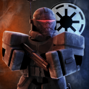

TGR | Republic Intelligence Guidelines
ANY LEAKAGE IS STRICTLY PROHIBITED AND WILL RESULT IN A UNIVERSAL BAN!
Table of Contents
I. General Overview
II. Rank Information
III. Recruitment Methods
IV. Promotional System
V. Chain of Command
VI. Signatures
I. General Overview
Hello, and congratulations on your positioning within Republic Intelligence. Your journey has just begun, and alas, you must learn about how operation works
within the Republic Intelligence. Everything has been conveniently placed into subheadings and headings for you, and you are expected tp familiarize yourself with such material. Welcome to Republic Intelligence.
CODENAMES:
All agents are to administer themselves a codename exceeding 3 characters. This codename will be what is utilized for Operations & Public Communications.
Example:
ForgottenArtemis | CST | "Spade"
In-Game Communications:
All ranks are obligated to be verbal at any time they choose to do so, however professionalism and grammar rules still apply whilst speaking, and un-needed communications must be minimal.
In-Game Neutralistic Observation:
While in-game, you are to ensure you are observing areas from a suitable distance, where you're still able to uphold secrecy and professionalism. If individuals outside of Republic Intelligence approach you
and ask you questions, you are to simply IGNORE THEM.
Behavioral Expectation
You are expected to ALWAYS be mature whilst on-duty, rather it be in-game or in discord. There should be no Racism, Sexism, etc, if you are caught being immature and
breaking these rules you will be blacklisted from Republic Intelligence.
II. RANK INFROMATION
Junior Agent:
"Junior Agent" is essentially just a paraphrase for "Íntern Agent", and as Junior Agent you are extremely restricted to what you're able to do, and what you're not able to do. To progress beyond this role, you
must exemplify activity, and loyalty towards Republic Intelligence.
Field Agent:
Field Agents are Junior Agents who have somewhat proved their loyalty and ability, they don't have much more power or authority but it's more of a concrete position.
Senior Agent:
Senior Agents have solidified their loyalty towards the Republic Intelligence, and therefore are administered special priviliges. Senior Agents commonly oversee portions of operations, and are assigned to more
"testing" operations.
Special Agent:
Special Agents are obligated to administer and oversee operations, investigations, interrogations, and may handpick members if approved by Deputy Director+.
Supevisor
Supervisors serve as the "Third in Command" within Republic Intelligence. Considered to be the first official High Command role, Executive Agents are tasked with managing the entirety of the division, and operations.
Deputy Director + Director:
The Deputy Director and Director alike have sovereign power all agents, and are the absolute authority within Republic Intelligence. They're responsible for running/efficiently operating the division as a
whole, and may release an academy from time to time.
III. RECRUITMENT METHODS
Academy:
Project Valerian serves as the primary entry pathway into the arms of the Republic Intelligence. It will be announced in the main TGR discord server by the Director or Overseer whenever they require more agents.
HAND-SELECTION:
Hand-selection, or "Hand picking", is another utilized recruitment method of joining Republic Intelligence, where the Director and Deputy Director can invite individuals they deem capable of joining the arms of
Republic Intelligence.
IV. PROMOTIONAL SYSTEM
JUNIOR AGENT -> FIELD AGENT:
In order to progress from Junior Agent to Field Agent you must actively attend a sufficient number of events, and prove your loyalty towards Republic Intelligence, once it has been decided by a HICOM member
that you demonstrate such requisites, your "INTERNSHIP" will be complete.
V. CHAIN OF COMMAND
Junior Agent
^
Field Agent
^
Senior Agent
^
Special Agent
^
Supervisor
^
Deputy Director
^
Director
^
Overseer
VI. SIGNATURES
xccStormXxxWatson - Director
ForgottenArtemis - Deputy Director